TPR's Middle America Tour
Nickelodeon Universe
Adventureland
Worlds of Fun
Silver Dollar City
City Museum
Six Flags St. Louis
Holiday World
Indiana Beach
Six Flags Great America Mt. Olympus Timber Falls Valleyfair
During our drive, our awesome bus driver Bryan pointed out this gorge. He told us what this gorge is called. But I forgot and can't figure out it's name. If you know what this gorge is called, please email me and tell me.
Shockingly enough, there was NO Chicago Traffic at all. Which got us to the hotel where I had my photo taken with Ice Bat.
 While everyone else decided to go out to eat and drink, I took a look at my SFMM season pass and saw how close we were to SFGAm, and decided to get a little bit of bonus time at Six Flags Great America.
While everyone else decided to go out to eat and drink, I took a look at my SFMM season pass and saw how close we were to SFGAm, and decided to get a little bit of bonus time at Six Flags Great America.
Somehow, I feel like I've already gotten this credit. (Oh yeah, I already have.)
Hello Six Flags Great America. You certainly don't look any different from how you did in my last visit.
 First things first. I finally get to get my Whizzer credit that I couldn't get last time due to a damn break down.
First things first. I finally get to get my Whizzer credit that I couldn't get last time due to a damn break down.
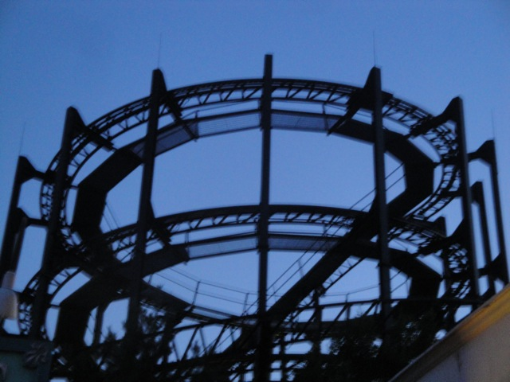
While it was fun and all, I prefer the Tig'rr Coaster @ Indiana Beach that I rode just this morning.
 Giant Drop at night.
Giant Drop at night.
To end my bonus night at SFGAm, I took a couple night rides on Viper.
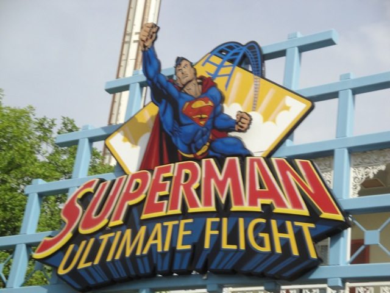
Fast foreword to the next day, we got the special privelage of being the first riders on Superman Ultimate Flight.
"Hey Kevin!! I saved you a seat!!"
"Syke!!!!!!!"
I miss Tatsu already.
Hey, at least I didn't 2 hours for this like I did two years ago.
 Up next, Ragin Cajun, the park's spinning mouse.
Up next, Ragin Cajun, the park's spinning mouse.
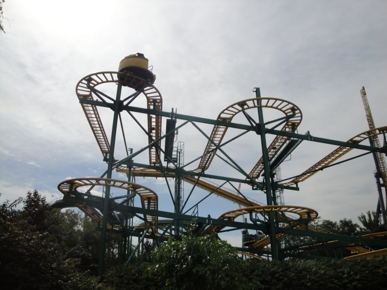
Not only is this ride not on the Qbot, but I also don't have the credit. Good thing we're riding now.
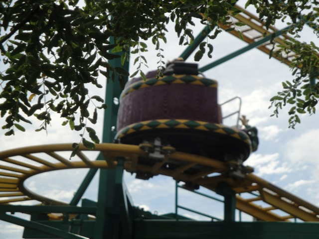
Good news. THIS RIDE KICKED ASS AND SPUN THE LIVING CRAP OUT OF US!!!!!! MUCH MUCH BETTER THAN PRIMEVAL WHIRL!!!!!! =)
 Continuing on the path of getting the credits I don't have here, we rode the Little Dipper next.
Continuing on the path of getting the credits I don't have here, we rode the Little Dipper next.
While my morning ride on it was fun, I'm really looking foreword to our ERT on this tonight that will not and I mean not under any circumstance be cancelled for any reason whatsoever.
 I may already have this credit, but V2 kicks ass.
I may already have this credit, but V2 kicks ass.
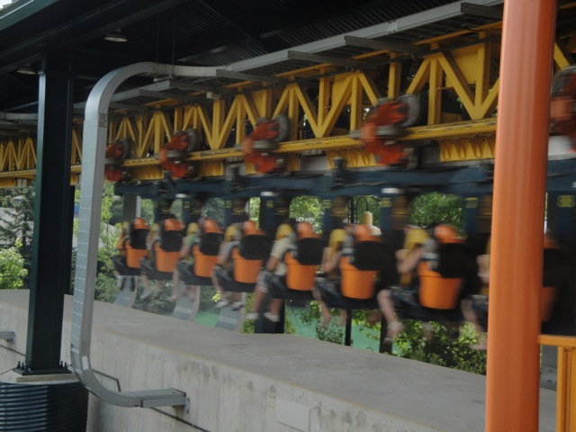
"Hey!!! California V2 may have an inline twist, but I go faster!!! So take that Discovory Kingdom!!!!"
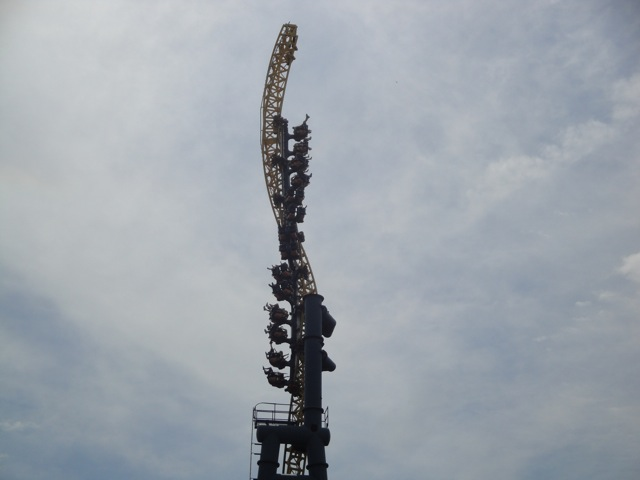
Twisty goodness.
 Ok, back to getting new credits that I don't have.
Ok, back to getting new credits that I don't have.
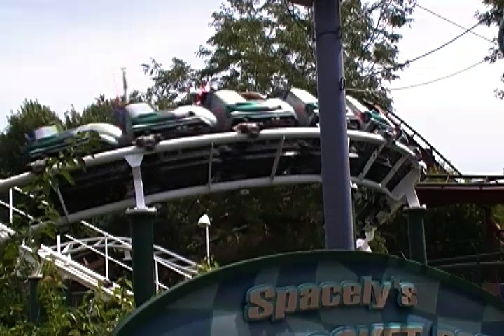
Hey Cody. I finally rode my 2nd Vekoma Roller Skater. Happy?
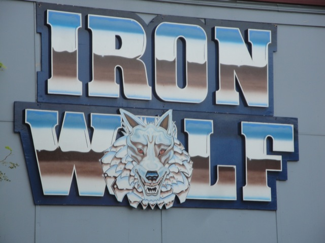
Yup, next up was Iron Wolf.
 Now I know how a lot of people hate Iron Wolf because of how unbearably rough it is.
Now I know how a lot of people hate Iron Wolf because of how unbearably rough it is.
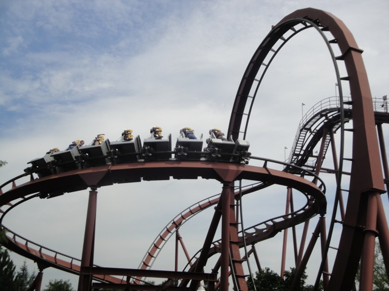
And they're right. It beats the crap out of you. But for some reason, I still like it. It's sort of rough, but in a funny weird hypnotic way.
 Thank you stupid SFOG kid. Thanks to you and your idiotic brain, these signs exist.
Thank you stupid SFOG kid. Thanks to you and your idiotic brain, these signs exist.
 Bad news for American Eagle. It really declined in quality over the past 2 years.
Bad news for American Eagle. It really declined in quality over the past 2 years.
It's not necesarrily a bad woodie, but it's not nearly as cool anymore. =(
Well at least Giant Drop hasn't declined in quality and still offers a giant drop.
 Meh, Raging Bull is still fun, but I just see so much wasted potential in this ride thanks to those trims.
Meh, Raging Bull is still fun, but I just see so much wasted potential in this ride thanks to those trims.
 And with that said, it's time for lunch.
And with that said, it's time for lunch.
Lunch was quite entertaining as was the Q&A with it. We even got to see Dan's weiner.
After lunch, we began our giant backstage tour with a look at Superman Ultimate Flight.
"Hey!!! Tatsu may have forces, fun, a great view, and speed. But you can't get this shot on Tatsu!! So keep that in mind next time you judge me Kevin!!!"
"I'm still the inferior flying coaster. Arn't I."
Moving on with our backstage tour.
"Yes it's true. I do in fact 69 on a daily basis and I'm damn proud of it."
"Yarr!! Who dares blow my head off!!! They don't know that they just messed with Yosemitie Sam!! They'll be sorry they ever decapitated me once I get through to them!!"
Is this the park's new 2011 attraction?
Bullsh*t!! The sky is blue!!!
Yeah. Backstage tours are awesome.
 Because you can get great rare shots like this one.
Because you can get great rare shots like this one.
 If there was only a train in this photo.
If there was only a train in this photo.
 One Splash Battle ride is enough for this trip, thank you very much though.
One Splash Battle ride is enough for this trip, thank you very much though.
Boo for Random Hair Gel Ads.
 I didn't ride Demon this year. But I'm sure that it hasn't changed since 2008.
I didn't ride Demon this year. But I'm sure that it hasn't changed since 2008.
 And now, lots and lots of Raging Bull Backstage Photos.
And now, lots and lots of Raging Bull Backstage Photos.
You read the sign. Everyone slow down and form a single file line please!
"Umm, a little privacy please?"
 "Thanks. That's much better."
"Thanks. That's much better."
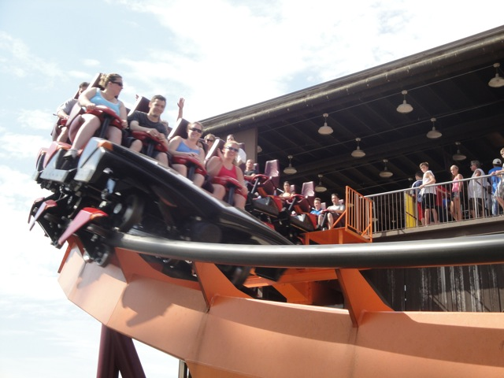
I should warn you all, this ride has very nasty trims.
 Thanks for the warning strange man with the camera.
Thanks for the warning strange man with the camera.
 Rare angle of Raging Bull.
Rare angle of Raging Bull.
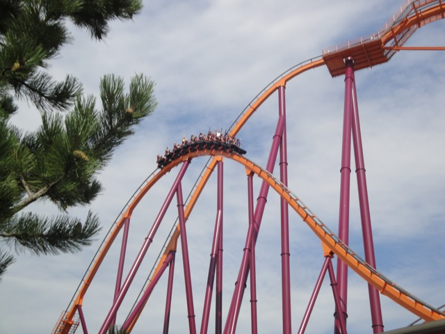
"Where'd all the speed go?"
 Backstage Viper.
Backstage Viper.
Double Dip Goodness.
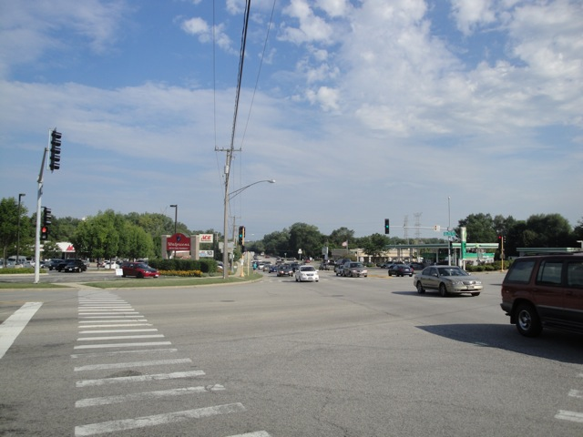
Unfortunetly, I had to go to a bank to get money, which was frustrating and difficult to find since I got lost. (I hate it when a street has 2 different names. It makes things such a pain in the ass.) Unfortunetly, I couldn't get the money til tomorrow, which made the whole thing pointless.
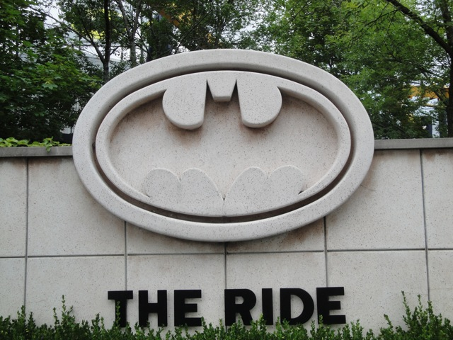
Yup. Time for another Batman the ride Clone.
"Hey, you know that the blue color scheme is currently in."
"So, I'm still the original and best Batman the ride."
 Yeah, it's still an awesome ride.
Yeah, it's still an awesome ride.
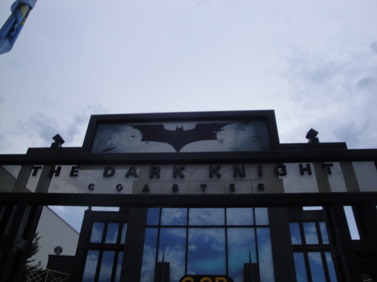
Speaking of Batman, I still have to get my Dark Knight credit.
"Who's the freak with the mask?"
It's not a bad ride. It's just not nearly as good as the park makes it out to be and doesn't match the theming. It's basically the Dr. Von Dark of coasters. (Or rather, Dr. Von Dark is the Dark Knight of water slides.)
Uh oh. Those clouds don't look good.
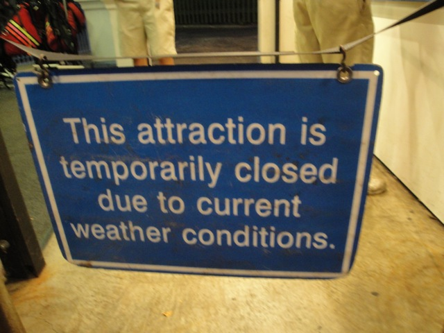
Come on. You're going to close the coasters just because of a little rain?
Well, now it's time to play the "Find an open ride game."
We found a winner!! Fiddler's Fling was still open!!
No, that's not a blurry photo. The ride actually spins that fast.
Please don't tell me that this is the end of our Little Dipper ERT.
Welcome to the TPR Bridge Party. Where all hopes and dreams of Little Dipper ERT come to die.
 Holy crap. The rain really got a lot harder.
Holy crap. The rain really got a lot harder.
"No!! I must flee the TPR Bridge Party before all my hopes and dreams of Little Dipper ERT die!!!"
"I'm making a rain angel. And I shall call him Mr. Angel."
Oh crap. We've got thunder and lightning here too.
Yeah, lightning is a bitch to photograph, so that's why I have this video camera still of the lightning. (I was lucky to get that earlier still at all.)
When did it become daytime? Oh, it's just the lightning.
Yeah, that rain is coming down pretty hard.
"A little help over here. I'm kind of stuck."
I'm not sure how it happened, but Dan actually got wet!!! =o
All right. The storms dead now. Time for Viper ERT!!!!
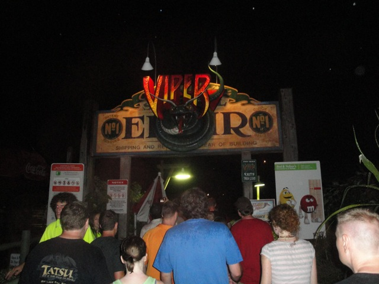
YAY!!!!! VIPER ERT!!!!!
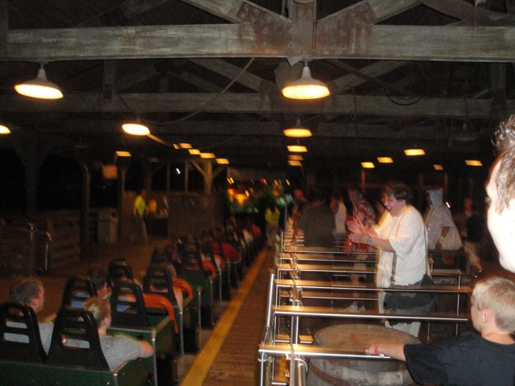
EXCITEMENT EVERYONE!!!!!!
While last nights rides were fun, they had nothing on this ERT.
 To make things better, the ride ran much better thanks to the rain.
To make things better, the ride ran much better thanks to the rain.
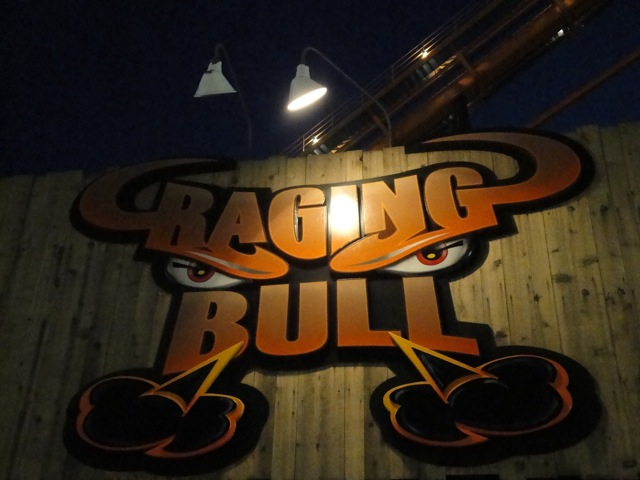
We also had ERT on Raging Bull.
 Yeah, this kicked some serious ass.
Yeah, this kicked some serious ass.
 I think the rain helped Raging Bull as well since those were the best Raging Bull rides I ever had.
I think the rain helped Raging Bull as well since those were the best Raging Bull rides I ever had.
Somehow, I wouldn't be suprised if this weather report was actually accurate.
Mount Olympus
Home